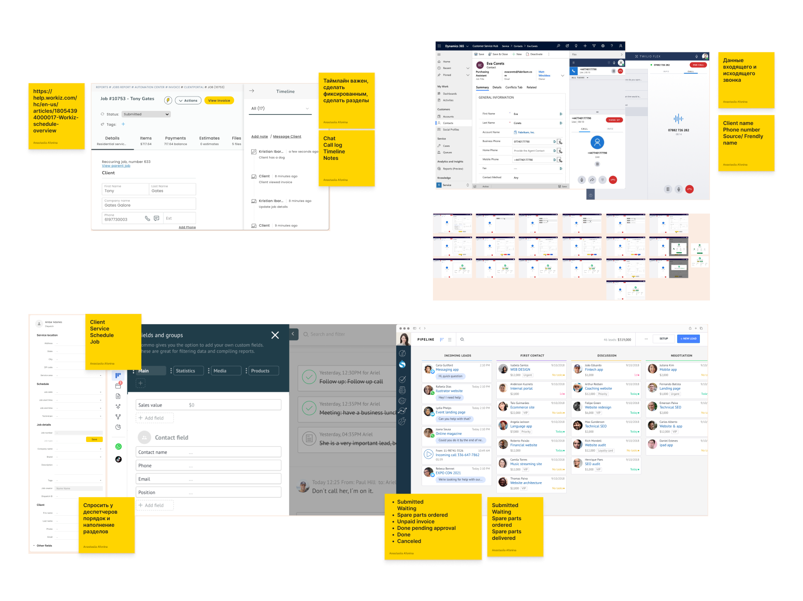
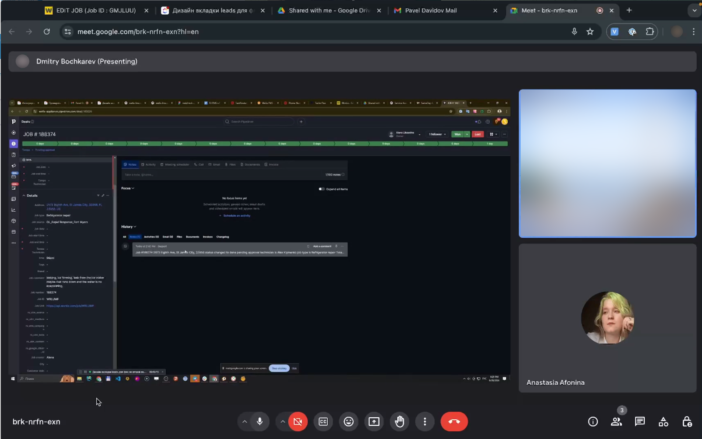
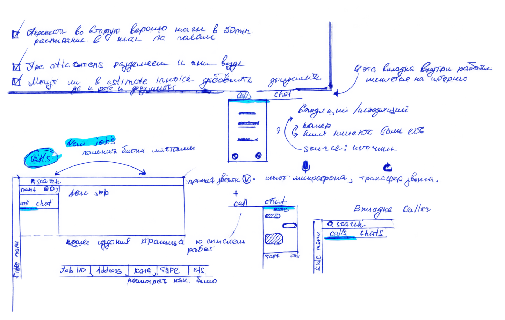
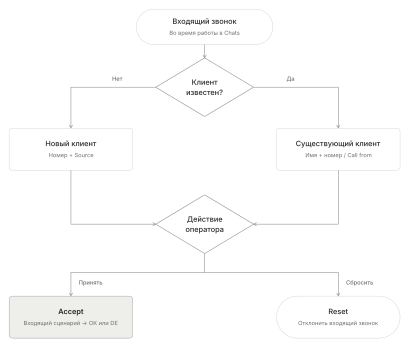
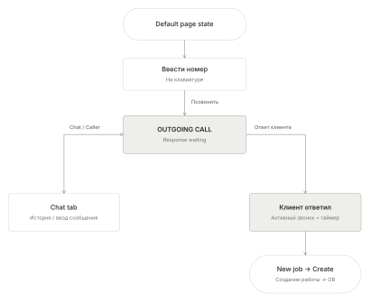
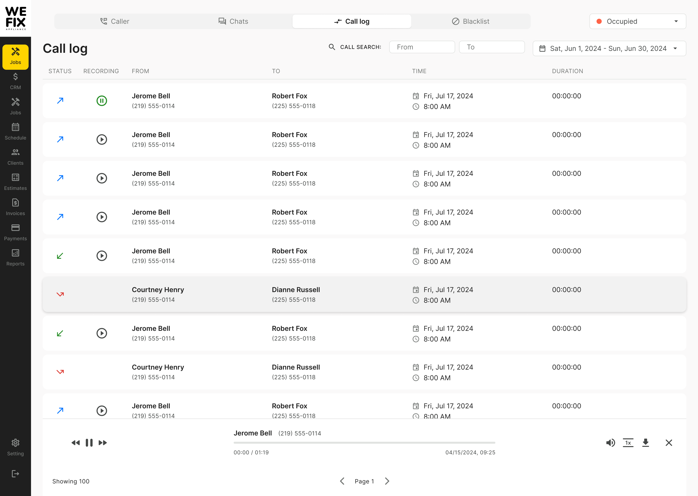
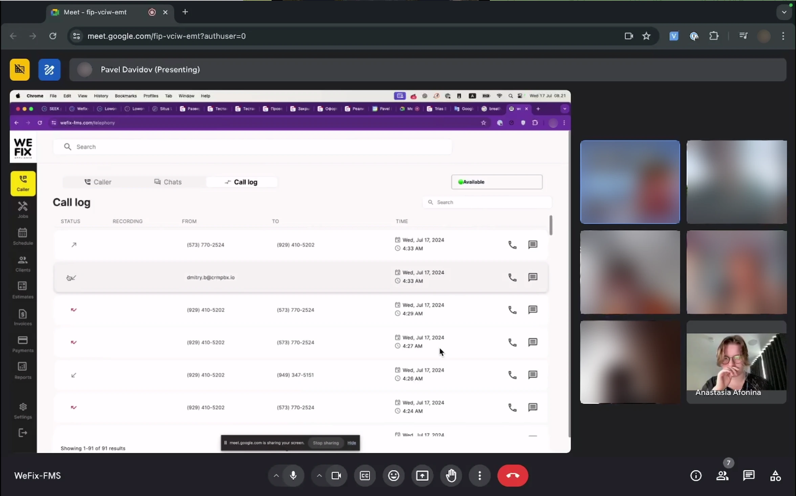

Communication & CRM
Bringing calls, customer history and repair bookings into one workspace for WeFix dispatchers.

Overview
Context
As WeFix grew, dispatchers handled more enquiries and repair jobs each day. They used separate services to speak to customers and manage jobs.
The challenge
During a call, the dispatcher switched between the phone system, the job and the schedule. Information from the conversation had to be entered manually.
This slowed dispatchers down and took their attention away from the customer while they clarified the problem, found a time slot and assigned a technician.
Duplicate customer and job records appeared, and dispatchers struggled to piece together what had happened on previous enquiries.
Research
Competitive analysis
I studied the dispatchers’ existing workflow, then compared how other CRM and phone systems handled six parts of an enquiry.
- how each service identified incoming callers
- how it handled repeat enquiries
- where it kept call and message history
- how a dispatcher created a job during a call
- how it recorded the outcome
- how the dispatcher followed up
The comparison showed why dispatchers needed access to the customer’s record while handling a call.

Working with users and the team
I interviewed the dispatchers who received and assigned enquiries every day.
I asked where dispatchers lost time, what they looked up during calls and what they did once a call ended.
We found that dispatchers needed customer details, previous jobs, communication history and the schedule in one workspace. When a customer called again, the system needed to fill in the details it already had.
I clarified product priorities with the stakeholder, and technical constraints and implementation scope with the engineers.








First iteration · Embedding Twilio in Jobs
Hypothesis
We wanted to see whether keeping calls and jobs in the same window would cut down on switching and manual entry.
We were still developing our own phone system, so we needed a temporary solution we could implement quickly.
Solution
The engineers and I considered three options.
- keep Twilio as a separate service
- integrate Twilio more closely with the platform
- embed the existing interface in an iframe
A deeper integration would take substantial engineering time for a service we planned to replace.
We narrowed the scope and embedded Twilio directly in the Jobs section using an iframe.
The dispatcher could take a call and work with customer and job details at the same time.
Interim result
Dispatchers switched between windows less often, but calls still ran through Twilio.
The iframe did not link each call to the customer record or the dispatcher’s follow-up actions.
Second iteration · Caller & CRM
Hypothesis
We expected our own phone system to let us link calls and messages to customer records, jobs and the CRM.
With that history in one place, dispatchers could spend less time retyping details and see which customers needed a follow-up.
Implementation
We developed two connected sections in parallel.
Caller became the communication workspace. Dispatchers could take calls, recognise returning customers, see their details and previous jobs, create a new job and view communication history.
WeFix kept calls, text messages, recordings and transcripts together.






CRM
The CRM brought together each lead’s customer record, communication history, deal status and next steps. It also logged missed calls so dispatchers could see who still needed a response.
The system prefilled details for returning customers. Later, it also used call transcripts to fill in some of the fields.
Results
Over two iterations, we moved from an embedded phone service to our own phone system and CRM. Dispatchers could follow one enquiry all the way to a repair job.
- Call
- Customer record
- CRM
- Booking
- Repair job
- Lead volume
- 2×
- WeFix introduced call tracking and adjusted its advertising budget.
- Time spent on tasks
- −20%
- Automation reduced the information dispatchers had to enter manually.
- Repeat enquiries
- +10%
- Dispatchers could use customer histories to follow up consistently.
The team reused these workflows and interaction patterns as the product grew. Mentoring helped new designers contribute sooner and keep the interfaces consistent.